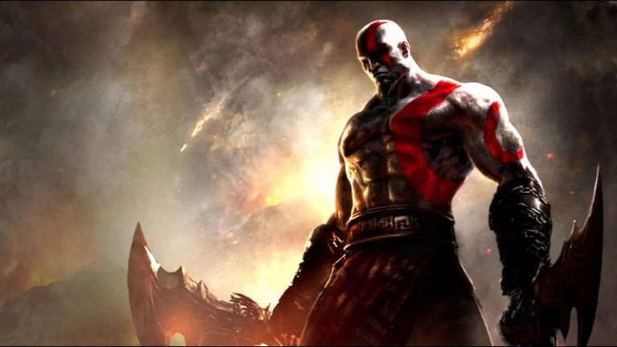

Nascido nas fogueiras da guerra de Esparta, Kratos foi forjado na dor e na traição. Amaldiçoado a carregar na própria pele as cinzas de sua família assassinada, ele se tornou um monstro pálido movido apenas por um desejo insaciável de vingança. O homem que desafiou o destino e rasgou o Olimpo agora busca, em terras distantes, um caminho difícil e silencioso para a redenção, lutando para ensinar seu filho a ser melhor do que ele jamais foi.